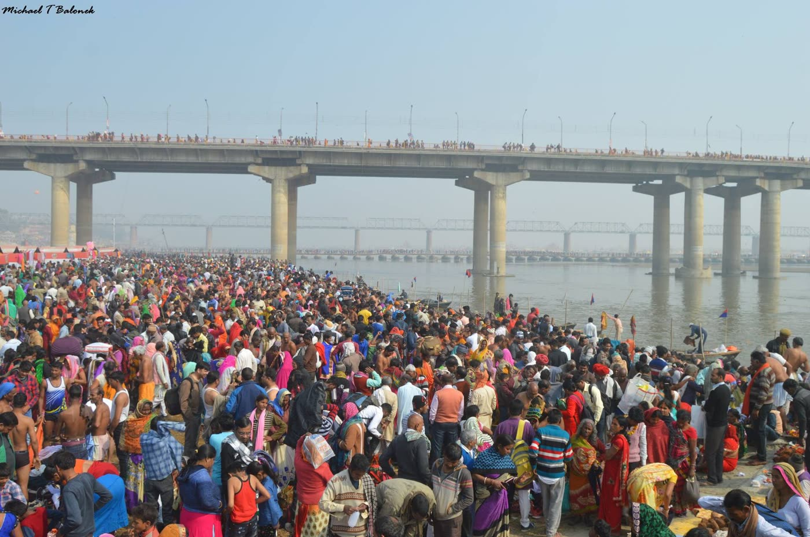
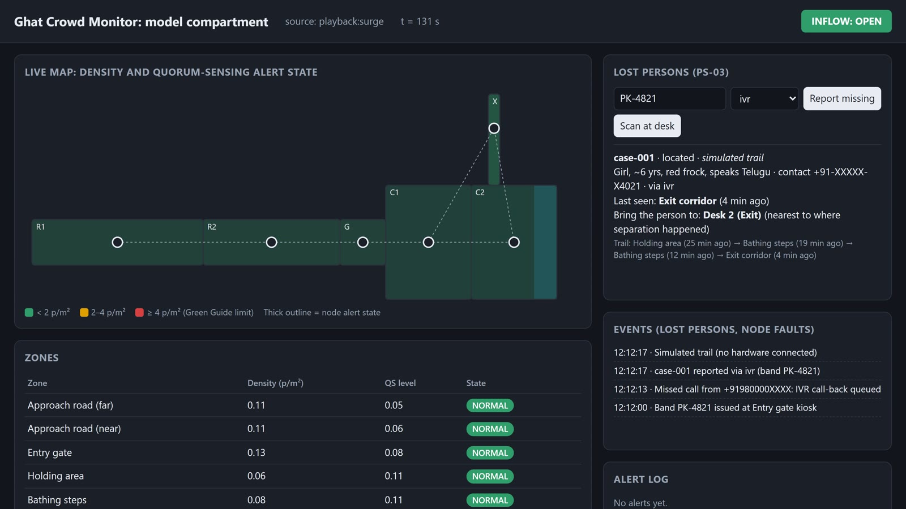

<title>Band, Trail and Desk</title>
<link rel="preconnect" href="https://fonts.googleapis.com">
<link rel="preconnect" href="https://fonts.gstatic.com" crossorigin>
<link rel="stylesheet" href="https://fonts.googleapis.com/css2?family=Archivo:wght@500;600;700;800&family=Source+Sans+3:ital,wght@0,400;0,600;0,700;1,400&family=IBM+Plex+Mono:wght@500&display=swap">
<style>
/* Layout: an A4 concept note. One reading column; each section carries the evaluation criterion it answers. */
:root {
  --paper: #ffffff; --ink: #15202b; --ink2: #3e4a57; --muted: #66717e; --rule: #d9dfe6; --wash: #f0f4f8;
  --river: #1d5b94; --ours: #1f6fbf; --base: #c4561f;
  --ok: #2b8a5a; --watch: #b97f00; --crit: #c13b3b;
  --fill: #fff3b0;
  --display: "Archivo", "Segoe UI", Arial, sans-serif;
  --body: "Source Sans 3", "Segoe UI", Arial, sans-serif;
  --mono: "IBM Plex Mono", Consolas, monospace;
}
@media (prefers-color-scheme: dark) { :root:not([data-theme="light"]) {
  --paper: #11161c; --ink: #e8edf2; --ink2: #c0c8d1; --muted: #8e99a5; --rule: #2a333d; --wash: #18202a;
  --river: #6fa8dc; --ours: #5a9ee6; --base: #e07a46; --ok: #4cb37f; --watch: #e0a52a; --crit: #e06464; --fill: #5a4a00; color-scheme: dark } }
:root[data-theme="dark"] {
  --paper: #11161c; --ink: #e8edf2; --ink2: #c0c8d1; --muted: #8e99a5; --rule: #2a333d; --wash: #18202a;
  --river: #6fa8dc; --ours: #5a9ee6; --base: #e07a46; --ok: #4cb37f; --watch: #e0a52a; --crit: #e06464; --fill: #5a4a00; color-scheme: dark }

@page {
  size: A4; margin: 14mm 15mm 16mm 15mm;
  @bottom-left { content: "Team IIIT Hyderabad · PS-03 concept note · Godavari Pushkaralu 2027"; font: 7.5pt "Source Sans 3", Arial, sans-serif; color: #66717e; }
  @bottom-right { content: "Page " counter(page) " of " counter(pages); font: 7.5pt "Source Sans 3", Arial, sans-serif; color: #66717e; }
}
body { background: var(--paper); color: var(--ink); font: 400 15px/1.5 var(--body); }
.doc { max-width: 820px; margin: 0 auto; padding-block: 32px 48px;
  padding-left: max(16px, env(safe-area-inset-left, 0px)); padding-right: max(16px, env(safe-area-inset-right, 0px)); }
h1, h2, h3 { font-family: var(--display); color: var(--ink); text-wrap: balance; margin: 0; }
h1 { font-size: 30px; line-height: 1.12; font-weight: 800; letter-spacing: -0.01em; }
h2 { font-size: 19px; font-weight: 700; margin-top: 4px; }
h3 { font-size: 15px; font-weight: 700; }
p { margin: 0; }
.eyebrow { font: 600 11px/1.3 var(--display); letter-spacing: 0.09em; text-transform: uppercase; color: var(--river); }
.lede { font-size: 16.5px; color: var(--ink2); }
/* normal flow (not grid) so long sections split cleanly across printed pages */
section { padding-top: 22px; margin-top: 22px; border-top: 1px solid var(--rule); }
section > * + *, .stack > * + * { margin-top: 10px; }
ul, ol { margin: 0; padding-left: 20px; }
li + li { margin-top: 4px; }
strong { font-weight: 700; }
.small { font-size: 12.5px; color: var(--muted); }
.mono { font-family: var(--mono); font-size: 12px; }
.fill { background: var(--fill); padding: 0 3px; border-radius: 2px; }

/* title block */
.titleblock { display: grid; gap: 12px; }
.meta { display: flex; flex-wrap: wrap; gap: 6px 18px; font-size: 13px; color: var(--ink2); }
.meta b { color: var(--ink); font-weight: 600; }

/* key figures */
.figs { break-inside: avoid; display: grid; grid-template-columns: repeat(4, minmax(0, 1fr)); gap: 10px; }
.fig { background: var(--wash); border-radius: 6px; padding: 10px 12px; display: grid; gap: 2px; align-content: start; }
.fig .n { font: 800 25px/1.1 var(--display); color: var(--ours); font-variant-numeric: tabular-nums; }
.fig .t { font-size: 12.5px; line-height: 1.35; color: var(--ink2); }

/* two-column blocks */
.cols { display: grid; grid-template-columns: minmax(0, 1.25fr) minmax(0, 1fr); gap: 18px; align-items: start; }
figure { margin: 0; display: grid; gap: 4px; break-inside: avoid; }
figure img { width: 100%; border-radius: 4px; display: block; }
figcaption { font-size: 11.5px; line-height: 1.35; color: var(--muted); }

/* steps */
.steps { break-inside: avoid; display: grid; grid-template-columns: repeat(2, minmax(0, 1fr)); gap: 10px 18px; }
.step { align-content: start; display: grid; grid-template-columns: 26px minmax(0, 1fr); gap: 2px 8px; break-inside: avoid; }
.step .k { grid-row: span 2; width: 22px; height: 22px; border-radius: 50%; background: var(--ours); color: #fff;
  font: 700 12px/22px var(--display); text-align: center; margin-top: 1px; }
.step p { font-size: 14px; }

/* status chips */
.chips { display: flex; flex-wrap: wrap; gap: 8px; }
.chip { display: inline-flex; align-items: center; gap: 6px; border: 1px solid var(--rule); border-radius: 999px; padding: 3px 10px 3px 6px; font-size: 13px; }
.dot { width: 12px; height: 12px; border-radius: 50%; display: inline-block; }

/* tables */
.tw { overflow-x: auto; }
table { width: 100%; border-collapse: collapse; font-size: 13px; line-height: 1.35; }
tr { break-inside: avoid; }
.eyebrow, h2, h3 { break-after: avoid; }
th, td { text-align: left; vertical-align: top; padding: 5px 8px; border-bottom: 1px solid var(--rule); }
th { font: 600 11.5px/1.3 var(--display); color: var(--ink2); background: var(--wash); }
td.num, th.num { text-align: right; font-variant-numeric: tabular-nums; white-space: nowrap; }
td .good { color: var(--ok); font-weight: 700; }
td .bad { color: var(--crit); font-weight: 700; }
tr.total td { font-weight: 700; border-top: 1.5px solid var(--ink2); }

.diagram svg { width: 100%; height: auto; display: block; }
.diagram text { font-family: var(--body); }

.refs { font-size: 11.5px; line-height: 1.4; color: var(--ink2); }
.refs li + li { margin-top: 2px; }
.refs a { color: var(--river); word-break: break-all; }
a { color: var(--river); }

.pb { break-before: page; }
@media print {
  body { font-size: 13.4px; }
  .doc { max-width: none; padding: 0; }
  h1 { font-size: 27px; }
  h2 { font-size: 17px; }
  section { padding-top: 14px; margin-top: 14px; }
  .lede { font-size: 15px; }
  .fig .n { font-size: 22px; }
}
@media (max-width: 640px) {
  .figs { grid-template-columns: repeat(2, minmax(0, 1fr)); }
  .cols, .steps { grid-template-columns: minmax(0, 1fr); }
  h1 { font-size: 25px; }
}
</style>

<main class="doc">
  <header class="titleblock">
    <div class="eyebrow">Concept note and technical proposal · Problem Statement 3: Lost-Person Identification and Reunification Assistance</div>
    <h1>Band, trail and the right desk: reuniting lost children and elders in minutes</h1>
    <p class="lede">Children and senior citizens get a simple band at entry. The roadside nodes already installed for crowd alerts quietly note anonymous band sightings. When a family reports someone missing, by desk, missed call or volunteer, the system finds the last-seen place and trail and sends both sides to the same help desk. No faces, no names, no smartphone needed.</p>
    <div class="meta">
      <span><b>Team</b> IIIT Hyderabad</span>
      <span><b>Challenge</b> RTIH × RMC Innovation-Led Solutions for Godavari Pushkaralu 2027</span>
      <span><b>Date</b> November 2026</span>
      <span><b>Demo video</b> <span class="fill">[link to PS03 video]</span></span>
    </div>
  </header>

  <section>
    <div class="eyebrow">Summary</div>
    <p>At mass gatherings, separations are common and slow to resolve: the family waits at one place, the found child at another, and announcements over loudspeakers rarely connect them. Our design fixes the meeting problem first. At entry, the family is told which help desk to go to if they get separated, and a found child or elder is taken to <strong>that same desk</strong>, the one nearest where the separation happened. A low-cost Bluetooth band adds a <strong>last-seen place and trail</strong>, read from the nodes only after a report, so volunteers know where to look. Reports work from any phone through a <strong>missed call</strong>. In simulation this halves the typical time to reunite.</p>
    <div class="figs" role="list">
      <div class="fig" role="listitem"><span class="n">37 → 17 min</span><span class="t">median time to reunite, today's practice vs our design (3,000 simulated cases each)</span></div>
      <div class="fig" role="listitem"><span class="n">28% → 79%</span><span class="t">of families reunited within 30 minutes</span></div>
      <div class="fig" role="listitem"><span class="n">≤ 29 min</span><span class="t">median even if only 30% of families follow the desk advice</span></div>
      <div class="fig" role="listitem"><span class="n">0</span><span class="t">faces, names or phone numbers on the band; sightings deleted after 60 min</span></div>
    </div>
    <p class="small">The reunion results come from a simulation with stated behaviour assumptions (§4), not field data. Each section below names the evaluation criterion it answers.</p>
  </section>

  <section>
    <div class="eyebrow">1 · The problem · Problem–solution alignment</div>
    <h2>Many get separated, few carry smartphones, and faces are off limits</h2>
    <div class="cols">
      <div class="stack">
        <ul>
          <li><strong>Scale.</strong> At Maha Kumbh 2025, about <strong>54,000</strong> separated people were reunited with their families, most of them women and elderly pilgrims [1]. Godavari Pushkaralu 2015 drew about <strong>11 crore</strong> bathers over 12 days [2]; for 2027 the state expects up to 10 crore [7].</li>
          <li><strong>Phones.</strong> Many rural pilgrims carry no smartphone, and often only one family member has any phone. A child may be with a relative or a neighbour, not a parent.</li>
          <li><strong>No facial recognition.</strong> The challenge rules exclude facial recognition without explicit approval (§10). Kumbh 2025's digital lost-and-found centres relied on it [1]; Pushkaralu needs a method that does not.</li>
          <li><strong>Today's practice.</strong> Loudspeaker announcements and paper registers. The family and the found person often wait at different places. In our simulation the median time to reunite is <strong>37 minutes</strong>, and only 28% are reunited within 30 minutes.</li>
        </ul>
      </div>
      <figure>
        
        <figcaption>Mauni Amavasya crowd, Kumbh Mela 2019. Photo: Michael T Balonek, CC BY-SA 4.0, Wikimedia Commons.</figcaption>
      </figure>
    </div>
  </section>

  <section>
    <div class="eyebrow">2 · Our solution · Innovation and originality</div>
    <h2>Five steps, built on the crowd-alert nodes already on site</h2>
    <div class="tw">
      <table>
        <thead><tr><th style="width: 24%">Step</th><th>What happens</th></tr></thead>
        <tbody>
          <tr><td><strong>1. Band at entry</strong></td><td><strong>Only children and senior citizens</strong> get a band, with a QR code, the helpline and a case code; no phone number is printed on it. The family gives <strong>any reachable number</strong> (a feature phone, a relative, the group leader) and is told <strong>which help desk to go to</strong> if separated.</td></tr>
          <tr><td><strong>2. Quiet sightings</strong></td><td>The gate and road nodes from our PS-01 crowd system note when a band passes. They store only <strong>anonymous IDs that change every few minutes</strong>, keep them for 60 minutes, and send nothing to a central server.</td></tr>
          <tr><td><strong>3. Report</strong></td><td>The family reports at a help desk, by a <strong>missed call</strong> from any phone (the system calls back), or through a volunteer. Only then does the desk ask the nodes about that band, and get back its <strong>last-seen place and trail</strong>. The band switches to "lost" mode and beacons faster.</td></tr>
          <tr><td><strong>4. Meet at the right desk</strong></td><td>The found person is taken to the <strong>desk nearest where they were separated</strong>, the same desk the family was told to go to, so both sides converge on one place.</td></tr>
          <tr><td><strong>5. Exit watch</strong></td><td>If a reported band passes an exit gate, the post there is alerted. This covers a child being led away by a stranger.</td></tr>
        </tbody>
      </table>
    </div>
    <figure>
      
      <figcaption>Figure 1. Our prototype dashboard after a missed-call report for band PK-4821: last seen in the exit corridor 4 minutes ago, the trail through the holding area and bathing steps, and "Bring the person to: Desk 2". In this demo the trail is simulated; no boards are connected.</figcaption>
    </figure>
    <p class="small">What is new: reunion is treated as a <strong>meeting</strong> problem (converge-at-desk) as well as a search problem, and the search uses privacy-preserving band sightings from infrastructure that is already installed for crowd safety, with no cameras and no app.</p>
  </section>

  <section>
    <div class="eyebrow">3 · Technical architecture · Technical feasibility, scalability and cybersecurity</div>
    <h2>Opaque IDs on the roadside, keys only in the registry</h2>
    <figure class="diagram">
      <svg viewBox="0 0 760 200" role="img" aria-labelledby="a3t">
        <title id="a3t">Architecture: the band beacons rotating IDs; roadside nodes keep sightings for 60 minutes; after a report, the registry server sends a search over the radio mesh and receives matches; desks, the missed-call line and the ICCC connect to the server.</title>
        <defs><marker id="aC" viewBox="0 0 10 10" refX="8" refY="5" markerWidth="6" markerHeight="6" orient="auto-start-reverse"><path d="M0,0 L10,5 L0,10 z" fill="var(--ink2)"/></marker></defs>
        <g font-size="10.5" fill="var(--ink2)">
          <rect x="2" y="20" width="140" height="112" rx="8" fill="var(--wash)" stroke="var(--ours)" stroke-width="1.5"/>
          <text x="72" y="42" text-anchor="middle" font-size="12.5" font-weight="700" fill="var(--ink)">Band (BLE)</text>
          <text x="72" y="64" text-anchor="middle">ID changes every few</text>
          <text x="72" y="80" text-anchor="middle">minutes (HMAC)</text>
          <text x="72" y="96" text-anchor="middle">faster beacons if lost</text>
          <rect x="157" y="20" width="140" height="112" rx="8" fill="var(--wash)" stroke="var(--rule)"/>
          <text x="227" y="42" text-anchor="middle" font-size="12.5" font-weight="700" fill="var(--ink)">Roadside nodes</text>
          <text x="227" y="64" text-anchor="middle">the PS-01 nodes</text>
          <text x="227" y="80" text-anchor="middle">60-min sighting buffer</text>
          <text x="227" y="96" text-anchor="middle">answer searches</text>
          <rect x="312" y="20" width="140" height="112" rx="8" fill="var(--wash)" stroke="var(--rule)"/>
          <text x="382" y="42" text-anchor="middle" font-size="12.5" font-weight="700" fill="var(--ink)">Radio mesh</text>
          <text x="382" y="64" text-anchor="middle">search goes out</text>
          <text x="382" y="80" text-anchor="middle">matches come back</text>
          <text x="382" y="96" text-anchor="middle">no internet needed</text>
          <rect x="467" y="20" width="140" height="112" rx="8" fill="var(--wash)" stroke="var(--ours)" stroke-width="1.5"/>
          <text x="537" y="42" text-anchor="middle" font-size="12.5" font-weight="700" fill="var(--ink)">Registry server</text>
          <text x="537" y="64" text-anchor="middle">per-band keys</text>
          <text x="537" y="80" text-anchor="middle">cases, search, found</text>
          <text x="537" y="96" text-anchor="middle">exit watch</text>
          <rect x="622" y="20" width="136" height="112" rx="8" fill="var(--wash)" stroke="var(--rule)"/>
          <text x="690" y="42" text-anchor="middle" font-size="12.5" font-weight="700" fill="var(--ink)">People</text>
          <text x="690" y="64" text-anchor="middle">help desks (browser)</text>
          <text x="690" y="80" text-anchor="middle">missed-call line</text>
          <text x="690" y="96" text-anchor="middle">ICCC and police</text>
        </g>
        <g stroke="var(--ink2)" stroke-width="1.6" fill="none">
          <line x1="143" y1="76" x2="155" y2="76" marker-end="url(#aC)"/>
          <line x1="299" y1="76" x2="310" y2="76" marker-start="url(#aC)" marker-end="url(#aC)"/>
          <line x1="454" y1="76" x2="465" y2="76" marker-start="url(#aC)" marker-end="url(#aC)"/>
          <line x1="609" y1="76" x2="620" y2="76" marker-start="url(#aC)" marker-end="url(#aC)"/>
        </g>
        <rect x="2" y="146" width="450" height="40" rx="8" fill="var(--wash)"/>
        <text x="227" y="163" text-anchor="middle" font-size="11" fill="var(--ink2)">Roadside side: only opaque IDs and times, deleted after 60 min;</text>
        <text x="227" y="178" text-anchor="middle" font-size="11" fill="var(--ink2)">nothing is uploaded until a family reports</text>
        <rect x="467" y="146" width="291" height="40" rx="8" fill="var(--ours)" fill-opacity="0.12"/>
        <text x="612" y="163" text-anchor="middle" font-size="11" font-weight="700" fill="var(--ours)">Only the registry, holding the keys,</text>
        <text x="612" y="178" text-anchor="middle" font-size="11" font-weight="700" fill="var(--ours)">can link a band's IDs</text>
      </svg>
      <figcaption>Figure 2. System architecture. A search is the only time sightings leave a node, and only for the reported band.</figcaption>
    </figure>
    <div class="tw">
      <table>
        <thead><tr><th style="width: 15%">Layer</th><th>Technology</th><th style="width: 30%">Status</th></tr></thead>
        <tbody>
          <tr><td>Band</td><td>ESP32 tag in the prototype; a low-cost nRF52 BLE wristband in deployment. ID = HMAC-SHA256(per-band key, time slot); the radio address rotates with it</td><td>Firmware done; not yet field-tested</td></tr>
          <tr><td>Nodes</td><td>The PS-01 ESP32 nodes: Bluetooth scan every second; 60-minute buffer of opaque IDs with time and signal strength</td><td>Done in firmware</td></tr>
          <tr><td>Search</td><td>The registry computes the band's IDs for the last hour and broadcasts them over the mesh (LoRa in deployment); matching nodes reply with zone and time</td><td>Done over ESP-NOW; the demo trail is simulated</td></tr>
          <tr><td>Server</td><td>Python FastAPI: issue band, report (desk, missed call, volunteer), cases, found scan with notification, exit watch; REST with OpenAPI documentation</td><td>Done; end-to-end tests pass</td></tr>
          <tr><td>Missed-call line</td><td>A missed-call number from a telecom or IVR provider that calls our documented endpoint</td><td>Endpoint done; line to be procured</td></tr>
        </tbody>
      </table>
    </div>
    <ul>
      <li><strong>Built in:</strong> a separate secret key for every band (a test caught two bands sharing a key, now fixed); nodes cannot link IDs; sightings expire after 60 minutes.</li>
      <li><strong>Planned for the pilot:</strong> TLS on all traffic; role-based logins for help desks; an audit log of every search; the registry encrypted at rest; consent records kept with each band; retention set by RMC policy; hosting in the RMC or state data centre following CERT-In guidelines.</li>
    </ul>
  </section>

  <section>
    <div class="eyebrow">4 · Evidence · Technical feasibility and expected impact</div>
    <h2>Meeting at the right desk is what halves the wait</h2>
    <figure class="diagram">
      <svg viewBox="0 0 760 175" role="img" aria-labelledby="c1t">
        <title id="c1t">Median minutes to reunite: today 36.7; QR band and registry 34.7; Bluetooth band and trail 33.0; our design, trail plus meeting at the right desk, 17.0; with the experimental auto-flag 14.0.</title>
        <g stroke="var(--rule)" stroke-width="1">
          <line x1="250" y1="8" x2="250" y2="146"/><line x1="360" y1="8" x2="360" y2="146"/>
          <line x1="470" y1="8" x2="470" y2="146"/><line x1="690" y1="8" x2="690" y2="146"/>
        </g>
        <line x1="580" y1="8" x2="580" y2="146" stroke="var(--ink2)" stroke-width="1.2" stroke-dasharray="4 4"/>
        <text x="586" y="141" fill="var(--ink2)" font-size="11">30-minute mark</text>
        <g font-size="12" fill="var(--ink)" text-anchor="end">
          <text x="240" y="28">Today: announcements + registers</text>
          <text x="240" y="54">QR band + registry</text>
          <text x="240" y="80">Bluetooth band + last-seen trail</text>
          <text x="240" y="106" font-weight="700">Our design: trail + meet at the right desk</text>
          <text x="240" y="132">+ experimental auto-flag</text>
        </g>
        <path d="M250 15 h399.7 a4 4 0 0 1 4 4 v10 a4 4 0 0 1 -4 4 h-399.7 z" fill="var(--base)"/>
        <path d="M250 41 h377.7 a4 4 0 0 1 4 4 v10 a4 4 0 0 1 -4 4 h-377.7 z" fill="var(--muted)" fill-opacity="0.55"/>
        <path d="M250 67 h359 a4 4 0 0 1 4 4 v10 a4 4 0 0 1 -4 4 h-359 z" fill="var(--muted)" fill-opacity="0.55"/>
        <path d="M250 93 h183 a4 4 0 0 1 4 4 v10 a4 4 0 0 1 -4 4 h-183 z" fill="var(--ours)"/>
        <path d="M250 119 h150 a4 4 0 0 1 4 4 v10 a4 4 0 0 1 -4 4 h-150 z" fill="var(--ours)" fill-opacity="0.5"/>
        <g font-size="12" fill="var(--ink)" font-weight="700">
          <text x="660" y="28">36.7</text><text x="638" y="54">34.7</text><text x="619" y="80">33.0</text>
          <text x="443" y="106">17.0</text><text x="410" y="132">14.0</text>
        </g>
        <g font-size="11" fill="var(--muted)" text-anchor="middle">
          <text x="250" y="162">0</text><text x="360" y="162">10</text><text x="470" y="162">20</text><text x="580" y="162">30</text><text x="690" y="162">40 min</text>
        </g>
      </svg>
      <figcaption>Figure 3. Median time to reunite, 3,000 simulated cases per approach. The band and trail alone save little; sending both sides to the same desk is what halves the wait.</figcaption>
    </figure>
    <div class="tw">
      <table>
        <thead><tr><th>Approach</th><th class="num">Median</th><th class="num">90th percentile</th><th class="num">Within 30 min</th><th class="num">Within 60 min</th></tr></thead>
        <tbody>
          <tr><td>Today: announcements + paper registers</td><td class="num">36.7 min</td><td class="num">74.0</td><td class="num">28%</td><td class="num">84%</td></tr>
          <tr><td>QR band + registry</td><td class="num">34.7</td><td class="num">52.7</td><td class="num">33%</td><td class="num">92%</td></tr>
          <tr><td>Bluetooth band + last-seen trail</td><td class="num">33.0</td><td class="num">43.7</td><td class="num">36%</td><td class="num">99%</td></tr>
          <tr><td><strong>Our design: trail + meet at the right desk</strong></td><td class="num"><strong>17.0</strong></td><td class="num"><strong>37.7</strong></td><td class="num"><strong>79%</strong></td><td class="num"><strong>99%</strong></td></tr>
          <tr><td>+ experimental auto-flag (family phone learnable)</td><td class="num">14.0</td><td class="num">35.0</td><td class="num">82%</td><td class="num">99.6%</td></tr>
        </tbody>
      </table>
    </div>
    <ul>
      <li><strong>Robust to family behaviour.</strong> Across family compliance from 30% to 90% and other assumption changes, our design's median stays at 14–29 minutes, against 37–38 for today's practice. It wins in every combination tested.</li>
      <li><strong>Assumptions, stated openly:</strong> parents notice after 2–10 min and search nearby for 10–30 min; a lost child drifts to a neighbouring zone at 0.3 per minute; bystanders find a child at 1 per 20 min and alerted volunteers at 1 per 4 min; 70% of families follow the desk advice; nodes detect a passing band 90% of the time. Site model: 60 zones of 40 m with 6 help desks.</li>
      <li><strong>Auto-flag is an extension, not the core.</strong> For families whose phone the band can learn, the band can flag a separation on its own (median 14 min), but in dense crowds it still raises too many false call-outs, so we will tune it during the pilot.</li>
    </ul>
  </section>

  <section>
    <div class="eyebrow">5 · Privacy and security · Data protection and compliance</div>
    <ul>
      <li><strong>No faces, no names, no printed phone number.</strong> The band carries a QR code, the helpline and a case code.</li>
      <li><strong>Strangers can't follow a band.</strong> Its Bluetooth ID is HMAC-SHA256 of a per-band secret key and the time slot, and its radio address changes at the same moment. Only the registry, holding the key, can link the IDs, and only after a report.</li>
      <li><strong>Data stays local and expires.</strong> Nodes keep sightings for 60 minutes and upload nothing centrally. A search runs only when a family reports.</li>
      <li><strong>Consent.</strong> Guardian consent is taken when the band is issued, in line with the Digital Personal Data Protection Act, 2023, which requires verifiable parental consent for children's data [3]. We will review the wording with RMC's legal team before the pilot.</li>
      <li><strong>Planned for the pilot:</strong> role-based access for help desks, an audit log of every search, and case records kept only as long as RMC policy requires.</li>
    </ul>
  </section>

  <section>
    <div class="eyebrow">6 · Prototype · Implementation readiness</div>
    <div class="tw">
      <table>
        <thead><tr><th style="width: 28%">Part</th><th>Status</th></tr></thead>
        <tbody>
          <tr><td>Band firmware (ESP32 tag role)</td><td>Rotating HMAC IDs and rotating radio address; faster beacons when lost; compiles (12% of RAM). <strong>Not yet field-tested.</strong></td></tr>
          <tr><td>Node firmware</td><td>The PS-01 node keeps a 60-minute sighting buffer, answers searches and relays the "lost" command.</td></tr>
          <tr><td>Backend API</td><td>Issue band, report (desk / missed call / volunteer), search, found scan with notification, exit watch, case list. End-to-end tests pass.</td></tr>
          <tr><td>Dashboard</td><td>Case panel with trail, designated desk, exit warning and event log (Figure 1).</td></tr>
          <tr><td>Demo (12 Nov)</td><td>We walk a band past the nodes, report it by missed call, and the dashboard shows the trail and the desk to go to.</td></tr>
        </tbody>
      </table>
    </div>
  </section>

  <section>
    <div class="eyebrow">7 · Fit with Pushkaralu requirements · Scalability and interoperability</div>
    <div class="tw">
      <table>
        <thead><tr><th style="width: 26%">Requirement</th><th>How the design meets it</th></tr></thead>
        <tbody>
          <tr><td>Pilgrims without smartphones</td><td>Missed-call reporting from any phone; desks and volunteers can file reports; the meet-at-desk step works with no device at all.</td></tr>
          <tr><td>Multilingual access</td><td>Colour-coded desks and the printed band need little reading; desk scripts and call-back prompts to be prepared in Telugu, Hindi and English for the pilot.</td></tr>
          <tr><td>Field usability</td><td>Help desks use any browser; volunteers need only the case code and the desk number.</td></tr>
          <tr><td>Reliability</td><td>Sightings and searches run on the node mesh, so a search works even when the mobile network is congested.</td></tr>
          <tr><td>Interoperability</td><td>Documented REST API; cases can be shared with the ICCC and police lost-and-found registers.</td></tr>
          <tr><td>Scale and cost</td><td>Bands only for children and senior citizens; nodes are shared with PS-01, so no extra infrastructure.</td></tr>
          <tr><td>Post-event use</td><td>Temples, fairs, school trips and other mass gatherings in the district.</td></tr>
        </tbody>
      </table>
    </div>
  </section>

  <section>
    <div class="eyebrow">8 · Plan and indicative cost · Implementation and cost-effectiveness</div>
    <div class="tw">
      <table>
        <thead><tr><th style="width: 22%">When</th><th>What</th><th style="width: 34%">Measured</th></tr></thead>
        <tbody>
          <tr><td>Nov 2026 – Jan 2027</td><td>Agree help-desk locations, band issuance points and the missed-call number; legal review of consent</td><td>Issuance time per family</td></tr>
          <tr><td>Feb – Mar 2027</td><td><strong>Live pilot at Maha Shivaratri</strong>, alongside PS-01</td><td>Time to reunite, % within 30 min, node detection rate, false exit alerts</td></tr>
          <tr><td>Mar – Jun 2027</td><td>Scale to all entry points; volunteer and police drills</td><td>Drill reunion times</td></tr>
          <tr><td>Jun – Jul 2027</td><td>12-day operation with the ICCC and police</td><td>Live KPIs</td></tr>
        </tbody>
      </table>
    </div>
    <ul>
      <li><strong>Bands:</strong> retail Bluetooth wristband beacons cost about <strong>₹1,300–1,530</strong> each in India [4, 5]; overseas bulk listings start near US$8 [6]. Reusing bands (collected at exits) or giving printed QR-only bands to adults with phones would cut the cost; the right mix is a decision for RMC.</li>
      <li><strong>Nodes:</strong> no extra cost; the PS-01 nodes do the sighting.</li>
      <li><strong>Desks and calls:</strong> any PC or tablet with a browser; a missed-call number from a telecom provider (to be quoted).</li>
    </ul>
    <p class="small">Indicative only: public retail listings (November 2026) before GST and bulk discounts; to be replaced by vendor quotes.</p>
  </section>

  <section>
    <div class="eyebrow">9 · Limitations and risks</div>
    <ul>
      <li><strong>The reunion results depend on assumed behaviour.</strong> No field data was used; the pilot will measure it.</li>
      <li>The radio model comes from published measurements, not our own. Whether ordinary Android phones advertise over Bluetooth (needed only for the auto-flag extension) will be measured at the pilot.</li>
      <li>A parent with no device cannot be detected by any radio system; for them, meeting at the right desk is what makes the difference, and it needs no device.</li>
      <li>Band issuance at busy entry points needs staff and a fast desk process; the cost of bands is the main budget item.</li>
    </ul>
  </section>

  <section>
    <div class="eyebrow">10 · What we need from RMC and RTIH</div>
    <ol>
      <li>Planned help-desk and band-issuance locations, and the Kotilingala model-compartment layout.</li>
      <li>A missed-call number or IVR line, and the link to police lost-and-found procedures.</li>
      <li>Pilot permission at Maha Shivaratri, with volunteers and police.</li>
    </ol>
  </section>

  <section>
    <div class="eyebrow">11 · Team</div>
    <p><strong>Team IIIT Hyderabad.</strong> <span class="fill">[Member names, roles, programme and year]</span> · Contact: <span class="fill">[name, email, phone]</span></p>
    <p class="small">Also submitted: PS-01 route-aware crowd alerts, whose nodes this design reuses.</p>
  </section>

  <section class="refs">
    <div class="eyebrow">References</div>
    <ol>
      <li>ETV Bharat, "Maha Kumbh 2025: Nearly 50,000 missing pilgrims reunited with their families", 2 Mar 2025. <a href="https://www.etvbharat.com/en/!state/uttar-pradesh-prayagraj-mahakumbh-2025-missing-persons-reunited-enn25030203144">etvbharat.com/en/…enn25030203144</a></li>
      <li>Business Standard (IANS), "Over 11 crore took dip in Godavari during 12 days", 26 Jul 2015. <a href="https://www.business-standard.com/amp/article/news-ians/over-11-crore-took-dip-in-godavari-during-12-days-115072600384_1.html">business-standard.com/…115072600384_1</a></li>
      <li>Digital Personal Data Protection Act, 2023 (No. 22 of 2023), Section 9, Government of India.</li>
      <li>Zbotic, B7 Bluetooth button wristband (nRF52) listing. <a href="https://zbotic.in/product/b7-button-wristband/">zbotic.in/product/b7-button-wristband</a></li>
      <li>Electropi, Holyiot 21011 nRF52810 beacon listing. <a href="https://www.electropi.in/holyiot-21011-nrf52810-portable-iot-device-outdoor-ibeacon-tracking-without-ear">electropi.in/holyiot-21011…</a></li>
      <li>Global Sources, nRF52 wristband beacon listing. <a href="https://www.globalsources.com/product/bluetooth-button_1209077300f.htm">globalsources.com/product/bluetooth-button_1209077300f.htm</a></li>
      <li>Siasat, "AP gears up for Godavari Pushkaralu 2027, expects 10 crore devotees", 3 Jun 2026. <a href="https://www.siasat.com/ap-gears-up-for-godavari-pushkaralu-2027-expects-10-crore-devotees-3481611/">siasat.com/…3481611</a></li>
    </ol>
  </section>
</main>
